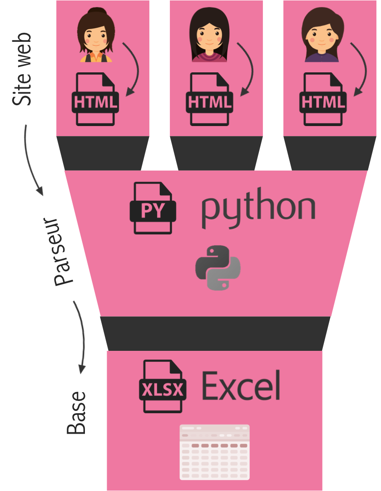
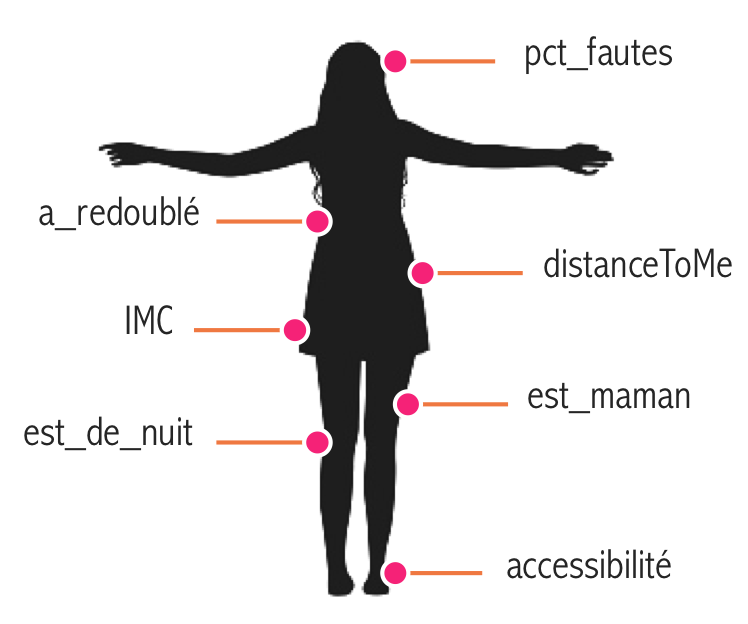

Collecte des données
Web scraping, constitution d'une base de données et création de variables.
Web scraping et base de données
300 profils de femmes ont été enregistrés au format HTML. Certains d'entre eux plairont à l'utilisateur du programme (les "positive sample"), d'autres non (les "negative samples"). Ces deux catégories de profils sont séparées dans deux dossiers disjoints. Les informations recoltées sont celles de femmes de la région parisienne ayant entre 19 et 27 ans.
Les variables suivantes ont ainsi été stockées dans une base :
- Informations d'ordre général : âge, ville, université/métier, une description textuelle.
- Attributs physiques : taille, poids, couleur des yeux et des cheveux, origine, style, tatouage et piercing.
- Des variables de goût : hobbies, sport, films/séries, livres, tabac, alcool, préférences sexuelles et physiques.

Un prétraitement sur les variables a alors été effectué. Les types de données ont été corrigés (entiers, chaînes de caractères, booléens, etc.). Les titres des séries et des films ont été harmonisés (orthographe, casse), et les caractères spéciaux supprimés.

Création de nouvelles variables
Enfin, les caractéristiques existantes ont permis de dériver de nouvelles variables :- Le pourcentage de messages reçus auxquels la femme a donné suite ;
- La longueur de la description, en nombre de lettres et de mots ;
- L'Indice de Masse Corporelle, rapport du poids sur le carré de la taille en cm ;
- Si la fille a redoublé, c'est-à-dire si elle étudie encore à 23 ans (rares sont les doctorantes sur AdopteUnMec...) ;
- Le nombre de séries en commun, gages de goûts similaires entre la femme et l'utilisateur du programme ;
- La distance à l'appartement de l'utilisateur du programme, en km ;
- Le pourcentage de fautes d'orthographe commises dans la description, au regard de sa longueur ;
- Si la femme a un emploi qui l'occupe la nuit (infirmière, barmaid, etc.).
L'ensemble de ces étapes est documenté dans le github dédié. Le rendu final est donné pour les 3ers profils féminins recueillis :
Certaines variables ont été volontairement occultées (l’alimentation, les livres préférés…) car ne présentent que peu d'intérêt pour la partie Machine Learning. En effet, on admettra qu'elles sont rarement discriminantes pour prédire l'intérêt d'un homme pour une femme. Enfin, le label est une variable binaire valant 1 si le profil a intéressé l'utilisateur du programme, 0 sinon.